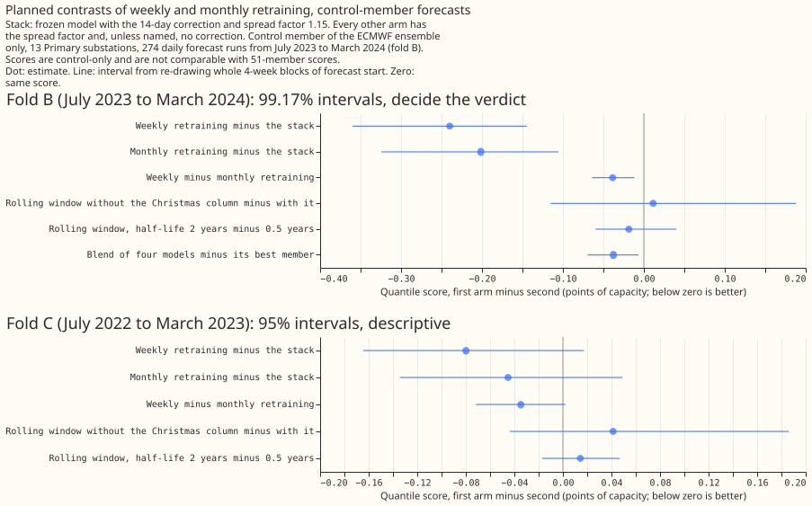
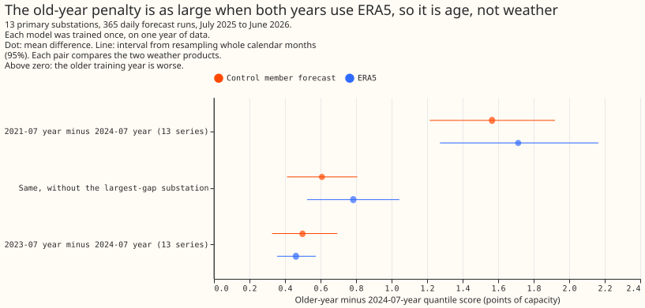

Retraining and training history
On 16 Primary substations, refitting the XGBoost demand model every week with no error correction scored 0.20 to 0.24 points of capacity below a model fitted once with the correction, on two separate sets of forecast runs (292 runs at 16 Primaries, and 274 control-member-only runs at 13). The gain is fragile: three substations carry much of it, and refitting weekly instead of monthly adds only 0.04 to 0.13 points. Models trained on one old year scored worse than ones trained on a recent year, but one substation drives most of that gap.
This theme asks how often to refit the demand forecast of Primary substations, and how much history to train on. The comparison throughout is the stack: an N1 model fitted once, with the 14-day correction and a spread factor of 1.15. Scores are quantile scores in points of capacity, and a negative contrast is an improvement. Refitting solar and wind models gained little, and the cause of the penalty on older training years is not yet found.

Monthly and weekly refitting scored below the stack, though monthly minus the stack has a 99.375% interval of -0.44 to +0.08, and the 14-day correction did not help a refitted model (16 Primaries, 73 runs; experiment 34).
Does it work?
A 12-month window, a half-life of 1 year or less, or the 14-day correction beat training on all history, and a model never retrained lost most (experiment 17). Against an all-history model retrained monthly, the mean absolute error of the median changed by -0.84 for a 12-month window (99.44% interval -1.19 to -0.53), -0.92 for a half-life of 0.5 years (-1.22 to -0.64), +0.52 for yearly retraining (+0.30 to +0.81), and +3.80 for never retraining (+3.12 to +4.47). The test used ERA5 weather, which arrives about 5 days late, so these are ceilings.
Refitting monthly scored 0.20 below the stack in experiment 34, and the pre-registered interval included zero. The contrast was -0.20 (95% interval -0.38 to -0.01; 99.375% interval -0.44 to +0.08), so the verdict is inconclusive. Weekly minus monthly was -0.07 (99.375% interval -0.18 to -0.00).
Weekly refitting beat the stack again on two further sets of runs. In experiment 48, on the 292 daily runs that experiment 34 left out, the contrast was -0.20 (99.44% interval -0.40 to -0.035) and weekly minus monthly was -0.13 (-0.24 to -0.03). In experiment 81, on 274 runs from July 2023 to March 2024 at 13 Primaries, scored with the control member only, the contrast was -0.240 (99.17% interval -0.360 to -0.145) and weekly minus monthly was -0.039 (-0.064 to -0.012). On an earlier set, July 2022 to March 2023, it was -0.080 (99.17% interval -0.187 to +0.051 in the text; the figure draws 95% intervals, -0.165 to +0.017): the same sign, with an interval that includes zero.

Weekly refitting beat the stack in July 2023 to March 2024 and had the same sign, with intervals that include zero, in July 2022 to March 2023 (13 Primaries, experiment 81).
Three substations carry much of the gain, so it is not established across all 16. In experiment 48 the contrast without D8 was -0.14 (99.44% interval -0.34 to +0.04), and without D8, D12, and D5 -0.08 (-0.24 to +0.10). A t-interval over the 12 months gave -0.43 to +0.04. In experiment 81, D8 alone gained 2.05 (95% interval -2.60 to -1.44), and without D8, D12, and D5 the contrast was -0.093 (95% interval -0.189 to -0.014). Experiment 81 found no sign that the weekly gain grows as 9 km weather data accumulates: it fell from -0.552 in December to -0.137 in March.
The 14-day correction helps a model fitted once in experiments 17, 19, and 48, and stops
helping a refitted one. It lowered the frozen model's score by 1.45 (95% interval -1.87 to
-0.98; experiment 48), though it did not help the frozen model on experiment 81's runs (+0.091,
-0.005 to +0.187). On a weekly model it
raised the score by 0.23 (99.375% interval +0.03 to +0.44; experiment 34) and by 0.08 to 0.16 with
intervals that include zero (experiment 48). It supplied nearly all of the stack's gain over N1:
-0.99 of -1.00, and the stack scored 0.56 below manual_heuristic
(99.44% interval -0.93 to -0.26; experiment
19).
Averaging the quantiles of several models gained 0.04 to 0.10 points. Three models gave -0.097 against the best member (98.33% interval -0.187 to -0.026; experiment 35). Five models gave -0.076 against weekly refitting (99.17% interval -0.135 to -0.023; experiment 49), and four gave -0.038 (99.17% interval -0.070 to -0.007), short of the 0.05 threshold (experiment 81). The three-model and five-model averages include the frozen stack as a member.
Refitting solar and wind models gained little. Monthly refitting minus a frozen model was -0.044 at 6 solar farms (99.44% interval -0.158 to -0.003) and +0.007 at 3 wind farms (-0.001 to +0.014), for ERA5-trained models (experiment 48). Six and three farms cannot say more.
Older training years hurt in models trained once on a single year, mostly through one substation, and neither the average level nor the weather product explains it. A model trained on 2021-07 to 2022-06 scored 1.57 worse than one trained on 2024-07 to 2025-06 on 13 Primaries with control-member weather (98.3% interval 1.14 to 2.00), but 0.61 (95% interval 0.41 to 0.81) without one substation, and removing each substation's trailing 365-day level took off 42% of that, under the half predicted (experiment 93). The gap was 1.71 with ERA5 weather in both years (99% interval 1.15 to 2.29), as large as with forecast weather, so the 18 km to 9 km change of weather product is not the main cause (experiment 95). The long-history sub-theme tests a physics-based model that may use old years. Experiment 95 also gave 0.61 without D8 on the control member and 0.78 on ERA5. Half-life contrasts under refitting were unresolved (experiments 34, 49, and 81).

The old-year penalty was as large on ERA5 as on forecast weather, so the weather product is not the main cause (13 Primaries, experiment 95).
These changes did not help a refitted model. Re-tuning the spread factor moved the score by -0.0001 (99.17% interval -0.012 to +0.018), and substation fingerprints in a pooled model by +0.009 (-0.037 to +0.050; experiment 49). A zero starting value moved it by -0.017 (98.75% interval -0.072 to +0.054; experiment 80). Dropping the Christmas column and changing the half-life from 0.5 to 2 years were unresolved (experiments 49 and 81).
Best design so far
The best of the recipes tested here for Primary demand is an N1 per substation, refitted weekly with no correction, with an average of quantiles over other models that includes the frozen stack. Weekly refitting scored 5.44 against 5.64 for the stack on 292 daily runs (experiment 48), and the five-model average scored 4.968 against 5.044 for weekly refitting on 73 runs (experiment 49). The half-life, the Christmas column, and the correction were not shown to help a refitted model (experiments 34, 49, and 81). BG2 builds on this recipe.
Candidates for production
Experiments 17, 19, 34, 35, 48, 49, and 81 are marked candidate; none is adopted. The
other experiments of the theme are not-for-production.
- Refit the Primary demand model weekly and drop the 14-day correction (experiments 34, 48, and 81). This adds a scheduled job that refits 16 series at about 10 seconds each on a graphics card (experiment 34). Monthly refitting gets most of the gain over the stack (-0.20 in experiments 34 and 81; -0.08 with an interval that includes zero in experiment 48), so the case for weekly over monthly is 0.04 to 0.13 points.
- Refit the bulk and grid supply point models weekly (experiment 48: -0.66 against the stack, 99.44% interval -1.23 to -0.27, on 4 series).
- Serve an average of quantiles at Primaries (experiments 35 and 49). It needs several models, and experiment 81 found a four-model version short of its threshold.
- The 14-day correction helps a model fitted once (experiments 17 and 19). A 12-month window or a 0.5-year half-life beat all history under monthly refitting in experiment 17, on ERA5 weather; their value under weekly refitting is unresolved (experiments 34, 49, and 81).
Gotchas and implementation details
- Use a monthly 12-month-window refit for contrasts of 0.05 or more, and quote absolute and tail scores from weekly refits. The window (150 rounds, learning rate 0.15) reproduced the monthly-minus-weekly gap to within 0.01 at 0.03 to 0.10 of the fit time, but scored 0.16 above full weekly refitting (experiment 85, experiment 34). For contrasts about cadence, retraining rules, or the correction, window, or half-life, use the weekly refit on all history with 150 rounds instead, because conclusions about them change with the schedule (experiment 85). Re-check for another model family or a contrast under 0.05.
- Do not use quarterly refits to compare arms. Quarterly minus weekly was +0.381 (95% interval +0.207 to +0.565) on the 12-month window, three times the monthly gap (experiment 85). Re-check on other row sets.
- Compare a refit arm only with a same-code repeat of its control. In experiment 75 only 9% of per-case scores matched the stored weekly run to 0.001, with a largest gap of 4.39 points, although the mean matched to 0.0001. Repeats moved the mean by 0.004 to 0.007 in experiment 80 and by 0.001 in experiment 85. Otherwise a per-case or per-event contrast reads fit noise. Re-check on CPU fits.
- Retest the 14-day correction after any change of refit cadence or target class. It helps a frozen model, hurts a weekly one in experiment 34 (+0.23, 99.375% interval +0.03 to +0.44), and stopped helping in experiment 48 (intervals include zero). Experiment 81's frozen model gained nothing from it. At supply points adding it raised the score by 0.305 (95% interval 0.060 to 0.594; experiment 87). For farms, a correction by the mean error raised the continuous ranked probability score by 0.437 (solar, 99.58% interval +0.215 to +0.664) and 0.413 (wind, -0.003 to +0.924), and a median of the window's errors moved it by +0.010 and -0.064, post hoc with intervals that include zero (experiment 23). A 7-day window and a multiplicative form were worse than the 14-day additive form, and the correction did not help 4 supply-point series (experiment 21). Re-check with another correction window or model.
- Report every contrast with and without the series that carries it. D8 alone gained 2.05 (experiment 81) and has a 13.1-point old-year gap while the other 12 substations range from 0.0 to 2.6 (experiment 95). Otherwise a pooled interval reads as a gain across all series. Re-check on other substations.
- Do not screen features on a frozen model. The weekly-analogue columns gained 0.05 on a frozen model and 0.01 under monthly refitting (experiment 34). Re-check with other recent-demand features.
- Do not stand in warm-start boosting for refitting. Warm starts got worse with more updates (7.76 against 6.21 for the weekly chain over the daily months; +1.55, +0.33 to +3.21), and a proxy that sees later data is a screening device, not a forecast score (experiment 34).
- Quote absolute scores only within one experiment's runs. The stack scored 5.32 on experiment 34's 73 runs and 5.64 on experiment 48's 292, and experiment 81's control-only scores match neither. The stack of experiment 19 has a half-life of 0.5 years, and the stacks of experiments 33, 34, 48, and 87 use the 2-year weighting. Re-check which stack a new experiment uses.
- Check that a 12-month window can test an input. The COVID indicator is constant inside the window, so it cannot be tested (experiment 49). Look for the input's variation within the window.
- A single month cannot show a weather-product change. The frozen model's lead over
manual_heuristicswings from 11.6% in April to 1.2% in June to 8.8% in August (experiment 81). Re-check with a model trained on one product.
What we have not settled
- Whether weekly refitting beats the stack at all 16 Primaries on a year the project has not scored, and with the full ensemble; the Research plan lists the longer ENS history.
- Whether any of the gain is adaptation to the 9 km weather product (experiment 81 could not separate them).
- What makes older training years worse. Drift differs by series (experiment 92, inconclusive), and experiment 95 suggests changes in solar, heating, or the electricity network without testing any.
- Whether the Christmas column and the half-life matter under weekly refitting.
The Experiments page lists every experiment of the theme.